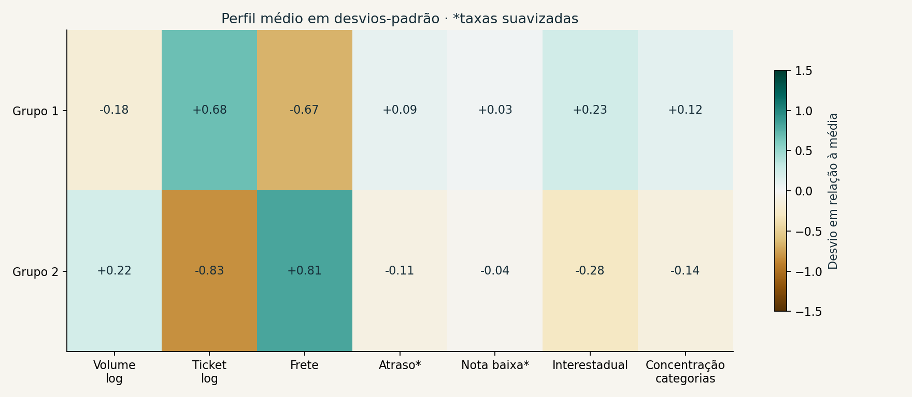
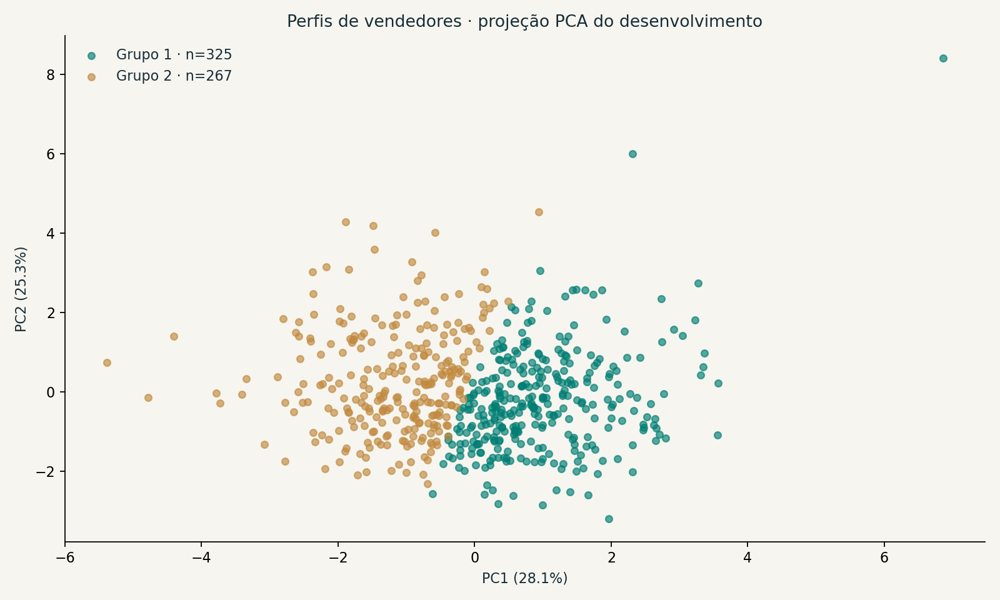
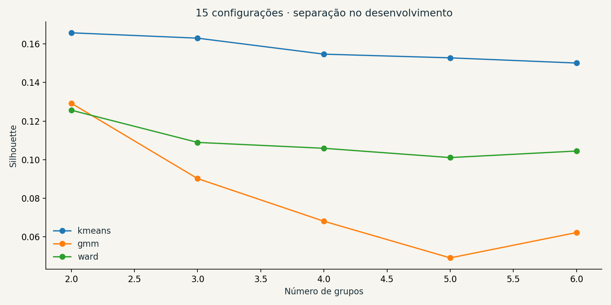
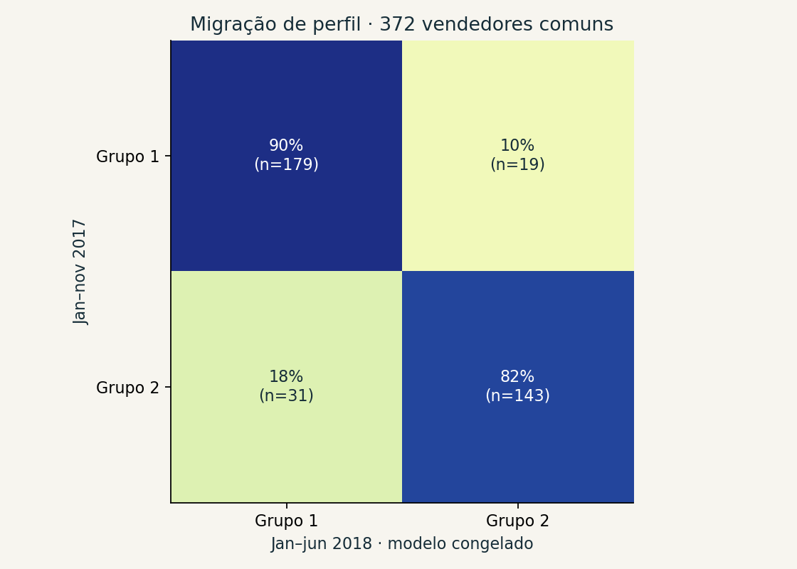

Decisão: usar como apoio à análise.
A segmentação tem estabilidade por reamostragem, mas separação moderada e sobreposição entre grupos. As recomendações são hipóteses para testar, sem ganho de receita demonstrado.
01 / CONTEXT
Uma base comum. Operações distintas.
Como organizar vendedores de um marketplace para investigar sortimento, logística e suporte? A fonte pública contém 99.441 pedidos e 3.095 vendedores. O estudo concentra-se nos 592 vendedores com ao menos 10 pedidos entregues na janela de desenvolvimento.
A amostra elegível não representa toda a cauda de baixo volume. Grupos não são rótulos de qualidade e não determinam incentivos ou sanções.
02 / METHOD
O perfil só usa o que já estava disponível.
Sete dimensões combinam volume, ticket, peso do frete, atraso, avaliações, alcance interestadual e concentração de categorias. Avaliações e atraso usam apenas pedidos de vendedor único para evitar atribuições ambíguas.
DesenvolvimentoJan–nov 2017
MaturaçãoAté 01 jan 2018
Avaliação posteriorJan–jun 2018
O período posterior tem maturação até 01 ago 2018. Scaler e modelo são congelados antes dessa avaliação. As janelas têm 11 e 6 meses: duração e sazonalidade podem afetar volume e migração.
03 / SELLER PROFILES
Explore os dois perfis.
Escolha um grupo para examinar suas características e uma hipótese de ação. Ticket e frete abaixo são medianas entre vendedores no desenvolvimento.
Participação no valor de mercadorias dos elegíveis:
Valor de mercadorias entregues, sem frete, em BRL nominal. Não é receita líquida ou lucro. Ações sugeridas precisam de teste controlado, dados atuais e margem real.
04 / EVIDENCE
A diferença principal está no perfil de compra.
O grupo de ticket maior concentra mais categorias e apresenta menor peso proporcional do frete. Atraso e avaliações ficaram próximos entre grupos; os dados não sustentam uma divisão entre vendedores “bons” e “ruins”.


05 / MODEL COMPARISON
Dois grupos foram suficientes para esta versão.
Comparamos 15 configurações de K-Means, Gaussian Mixture e Ward, com 2 a 6 grupos. K-Means com dois grupos foi escolhido pela maior silhouette entre candidatos com grupos de tamanho viável e estabilidade por subamostragem.
Silhouette de 0,166 indica sobreposição: os grupos são uma simplificação útil para explorar hipóteses, sem evidência de classes naturais. ARI médio de 0,871 vem de 12 subamostras de 80%; não é um intervalo de confiança.

06 / TEMPORAL STABILITY
O perfil pode mudar com o tempo.
Entre os 372 vendedores elegíveis nas duas janelas, 86,6% permaneceram no mesmo grupo. O ARI temporal de 0,533 é menor que a estabilidade por reamostragem. Mudanças de mix, sazonalidade e duração da janela também afetam essa migração.

07 / NEXT STEPS
Transformar perfis em hipóteses testáveis.
- Investigar sortimento, disponibilidade e suporte especializado no perfil de ticket maior.
- Avaliar cesta, consolidação logística e peso do frete no perfil de ticket menor.
- Repetir a análise com dados recentes e janelas de duração fixa.
- Testar intervenções com experimento controlado, custos reais e monitoramento por região/categoria.
O estudo completo está aberto.
Notebook CRISP-DM executado, comparação dos modelos, artefato congelado, dashboard Streamlit, inferência em lote, testes e evidências agregadas.
Ver projeto no GitHub ↗